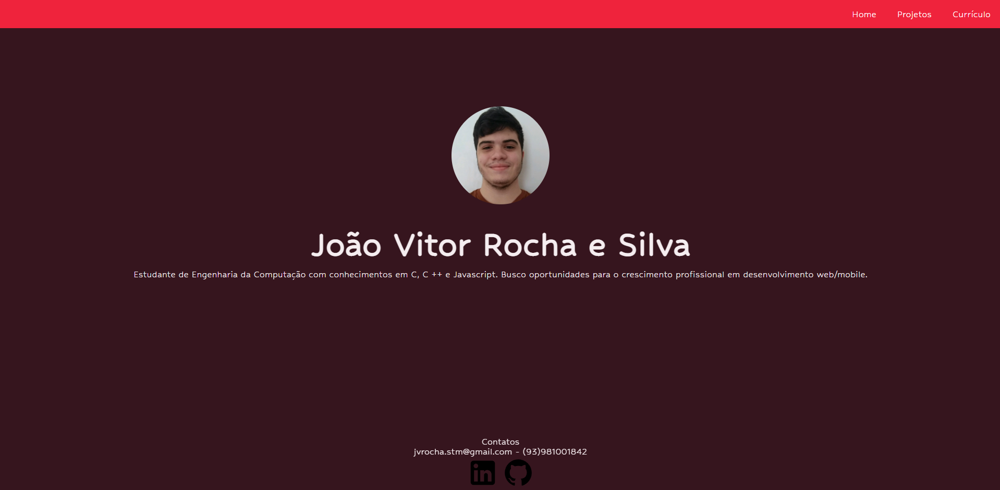
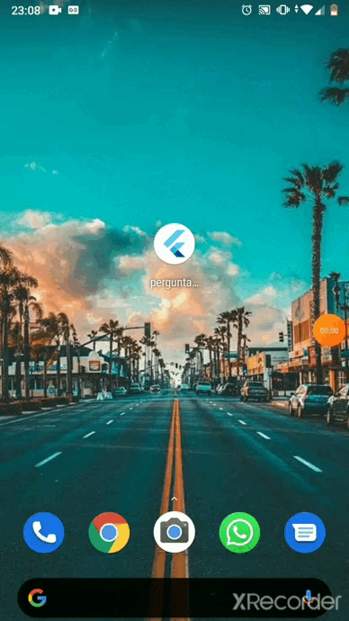

Um website desenvolvido em HTML e CSS para apresentação das minhas habilidades e projetos.
Uma aplicação simples desenvolvida em Dart e Flutter. Consiste na escolha entre as alternativas, cada uma com um peso diferente. Ao fim da aplicação o usuário recebe uma mensagem de acordo com a sua pontuação e a opção de reiniciar.
